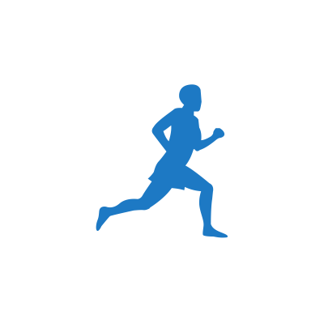
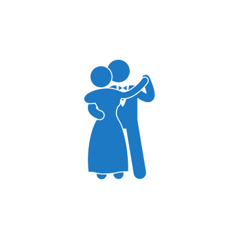
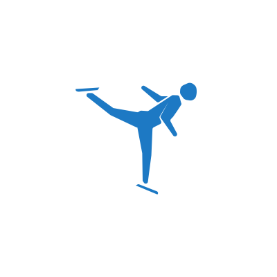
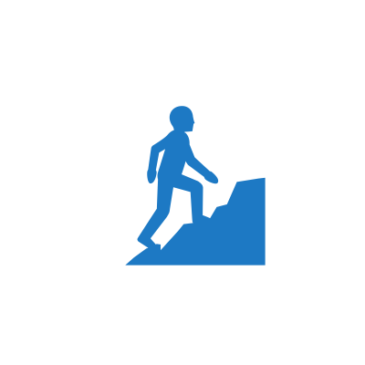
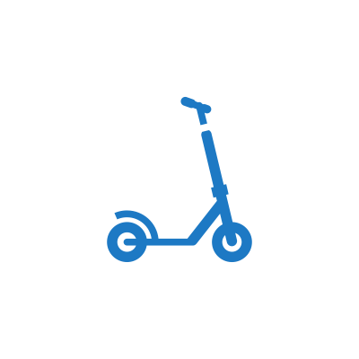

ВИДЫ ФИЗИЧЕСКОЙ АКТИВНОСТИ
Четверть населения земли недостаточно физически активны, а это значит, что значительный процент людей являются потенциальными претендентами на получение диагноза рак. Именно поэтому так важно следить за своим состоянием и держать «форму», а для этого надо совмещать три вида физической нагрузки: обычную, аэробную и упражнения для развития силы и гибкости.
Повседневная нагрузка

К этой категории относят повседневные обычные действия человека: ходьба, мытье полов, подъемы по лестнице и т. п. Все, что требует работы мышц и легко выполнимо, считается легкой физической активностью. Кажется, что такие простые действия не несут большой пользы, но это не так, такая физическая нагрузка помогает держать в тонусе мышцы, сохранять нормальный вес, ведь во время уборки, хождения по лестнице сжигаются калории. Если Вы - сотрудник офиса и большую часть дня проводите перед компьютером, старайтесь больше ходить пешком, занимайтесь посильными видами спорта.
Аэробные упражнения
-

бег
-

танцы
-

катание на коньках и роликах
-

подъем на гору
-

езда на самокате и т. п.
Все эти занятия требуют гораздо больше усилий, чем простая нагрузка в виде ходьбы или домашней уборки. Но они очень полезны, так как задействует крупные мышцы тела, укрепляют легкие и способствует насыщению кислородом тканей. Также упражнения благоприятно влияют на сердце, снижают артериальное давление.
Активные упражнения заставляют работать легкие и сердце в полную мощность. Поэтому, если человек никогда не занимался физкультурой, ему стоит начать с маленькой нагрузки и поэтапно ее увеличивать. После сорока лет, перед тем как выбрать комплекс упражнений, лучше сходить к врачу, чтобы он оценил состояние вашего здоровья и физические возможности и дал рекомендации по увеличению физической нагрузки.
Упражнения на развитие гибкости и силы

Эластичность связок и мышц у молодых и пожилых людей различаются. У последних мышцы менее эластичны, а вокруг сустава ткани становятся более плотными. Любая физическая активность в таком случае замедляет процессы потери эластичности мышц. Кроме того, упражнения предотвращают и замедляют развитие болезней суставов, которая часто сопровождает пожилых людей и людей, ведущих малоподвижный образ жизни.
В старшем возрасте тренировки могут защитить от ранней потери мышечной массы, а также улучшить выносливость и повысить тонус мышц. Главное — это подбор индивидуальных упражнений и планирование посильных нагрузок, в противном случае, если переусердствовать, можно получить травму.